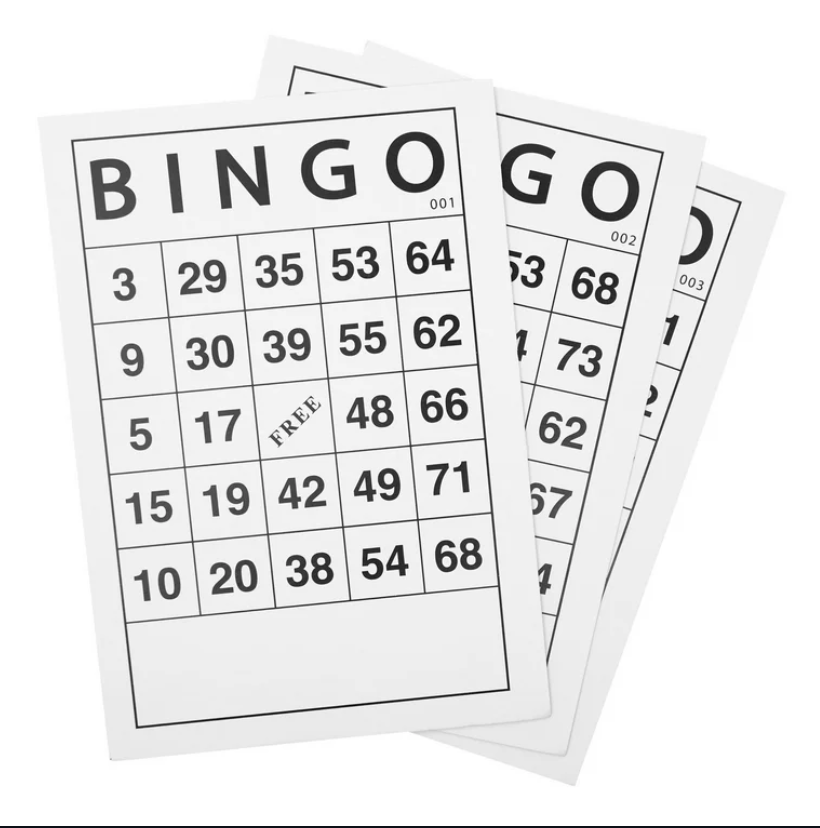

I have many hobbies, varying from sports to arts . My first hobby, which I became attached to, was drawing, simply because of the creative freedom it offered. Furthermore, I attended a couple of art classes, and my family encouraged me to keep that hobby. Another hobby from my childhood is video games. As I grew, my cousins and friends introduced me to a whole new world, which I would immerse myself in. Even to this day, I play video games to relax and ease my mind. These activities are some of my favorites, which I do most often.
Throughout my life, I’ve had many experiences that molded me into the person I am today. From joining a club to help underprivileged students, where I learned to be kind and compassionate. To later volunteer at an event to help local senior citizens serve food and host bingo . Another significant experience was winning an award from the Science Olympiad in front of an audience, which made me feel accomplished. Overall, this experience and the actions I have taken so far have helped make me the person I am today.
Looking ahead, I want to continue upgrading my skills in both aspects, academically and personally. My main goal right now is to pursue a career in bio or computer science by enrolling in a really good college. To achieve this goal, I plan on taking AP-level classes to gain recognition and experience in the field of these colleges . In addition, I hope to intern in companies surrounded by and built on pure bio or computer science to gain hands-on experience. Setting priorities and goals will help me each my intended career/goals.